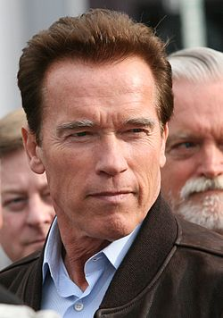

|  |
Arnold Alois Schwarzenegger (Thal, Austria, 30 de julio de 1947) es un exfisicoculturista, actor y político austriaco nacionalizado estadounidense que ejerció como trigésimo octavo gobernador del estado de California desde 2003 hasta 2011.
Schwarzenegger ganó fama en todo el mundo como un ícono de las películas de acción de Hollywood, conocido por sus papeles protagonistas en películas como Conan el Bárbaro, Comando, Terminator, Depredador, Total Recall y The Expendables. Fue apodado el Roble austríaco y el Roble de Estiria en sus días de culturismo, Arnie durante su carrera como actor y más recientemente el Governator (una contracción de Governor y Terminator). Además, está en el WWE Hall of Fame, ingresando en 2015, y fue anunciado como personaje jugable "The Terminator" en WWE 2K16.
|